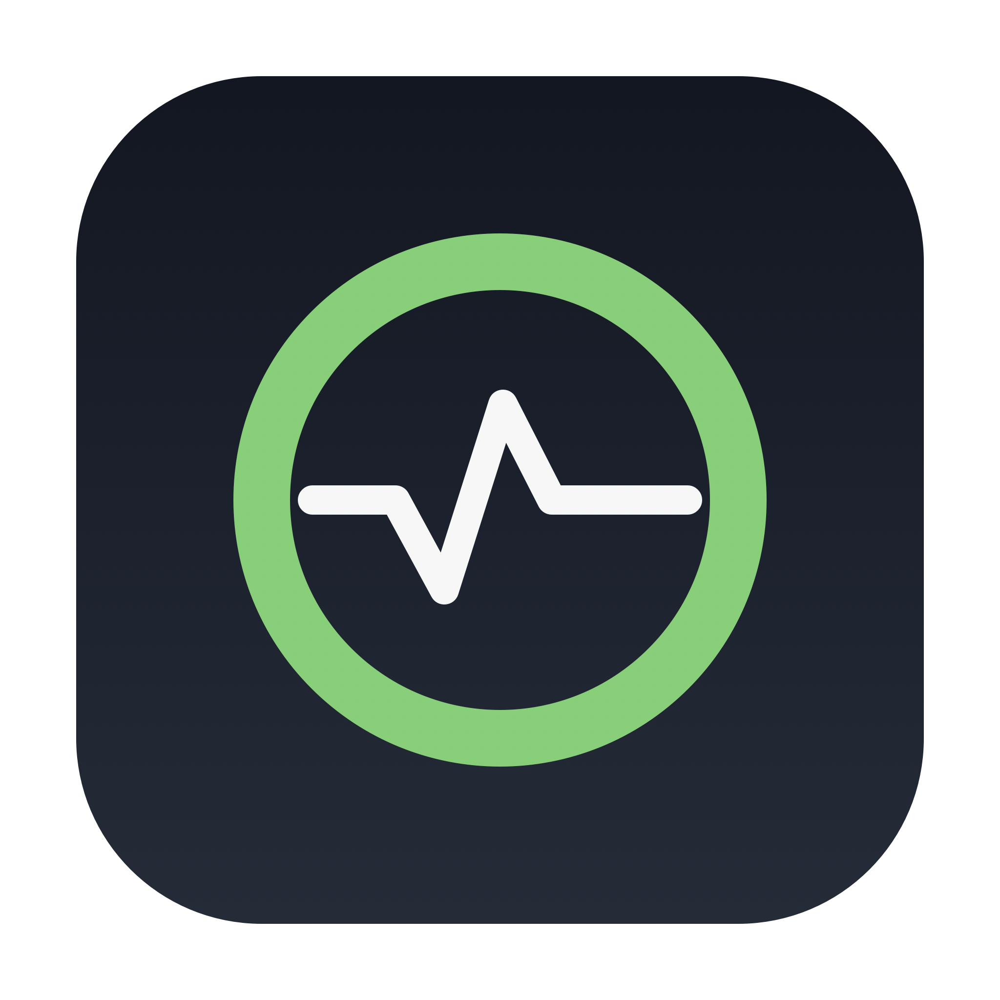
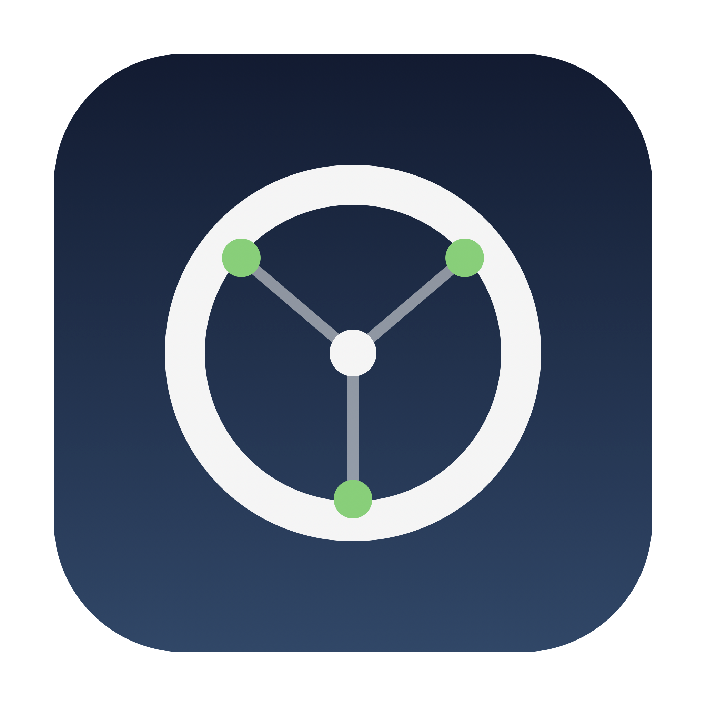
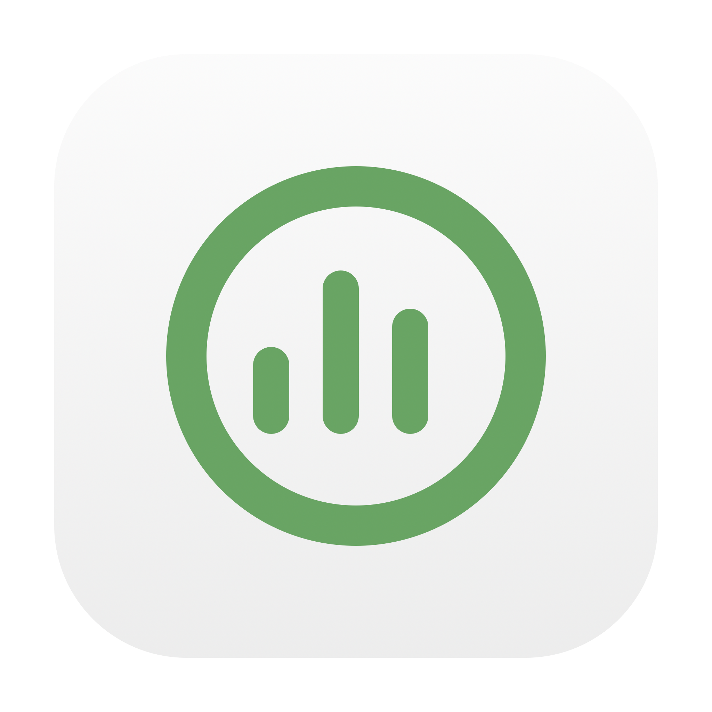

更明确地表达「API 流量监测」
不建议在图标上写 “API” 文字：16–32px 下看不清。用符号表达更稳。

D · 脉冲环
绿色空心环 + 心跳线
既表示状态，也像监控探针
推荐

E · 节点环
圆环 + 三个连接节点
更像 API / 网络拓扑
技术感

F · 用量柱
圆环 + 三根柱状图
直接表达“用量统计”
报表感
推荐 D：菜单栏只保留空心圆，App 图标用「脉冲环」补足“监测”含义；两者一眼能对应上。
如果更想强调“接口调用”，选 E；更想强调“用量/账单”，选 F。